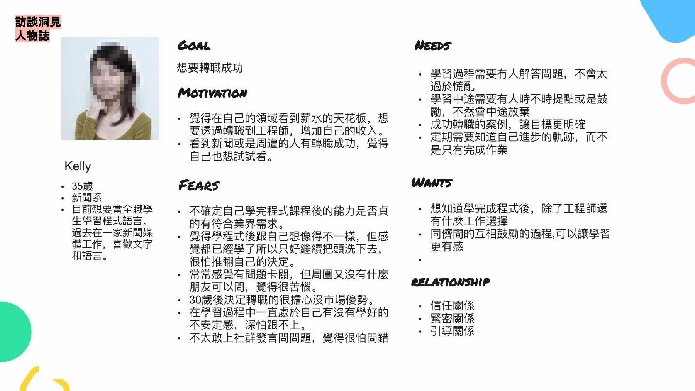
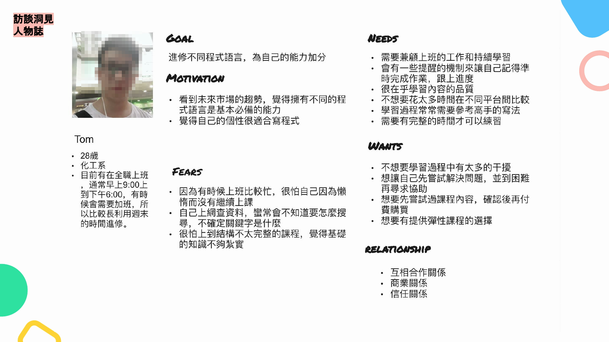
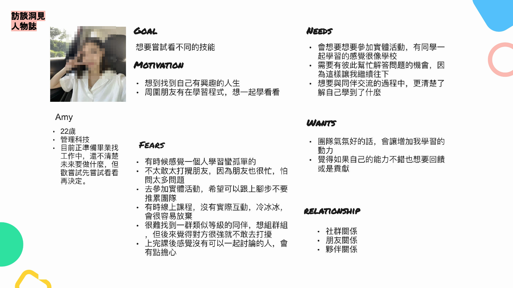
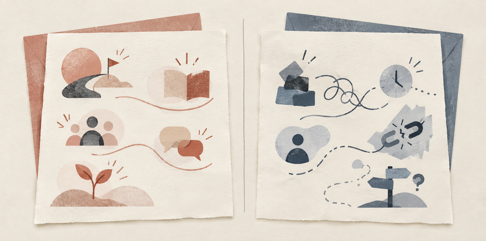

案例研究 · 使用者研究 · 服務設計 · 2021
從課後互動不足，找出學生關係的五個改善切入點
AlphaCamp 發現學生完成課程後，與平台及學習社群的互動逐漸減少。研究團隊透過學生訪談、關係研究與參與式工作坊，把影響信任、學習支持與社群參與的因素，轉成不同學習情境的服務改善方向。
我的貢獻
我是四人研究團隊成員之一。以下分開標示我主責與共同執行的工作，團隊研究產出不等同於個人單獨完成。
研究規劃
規劃研究框架、研究流程，以及內部與參與式工作坊的進行方式。
訪談與歸納
參與學生、助教與專家訪談，整理紀錄並歸納人物誌與關係因素。
服務發想工作坊
帶領團隊針對 Kelly 與 Tom 展開服務方向，並依急迫性與發生頻率整理情境。
流程與服務草圖
把學習需求整理成服務流程與概念草圖，例如技能樹與提問介面。
學生完成課程後，為什麼很少繼續與平台互動？
AlphaCamp 觀察到三個現象：課程結束後互動逐漸減少、學習社群參與不如預期，學生也較少主動分享學習成果。團隊知道關係沒有延續，卻還不清楚問題發生在哪些學習環節。
研究因此不直接尋找新功能，而是回到完整學習歷程，理解學生如何建立信任、哪些經驗會促進或破壞關係，以及什麼條件會讓他們更願意持續參與和分享。
這裡的「關係」指學生與 AlphaCamp 在課程及課後的持續互動、信任、學習支持、社群參與與主動分享意願，不只是抽象的品牌好感。
利益關係人
整理學生、助教、專家與平台之間的互動網絡。
課程旅程
定位可能影響關係的學習階段與接觸點。
早期假設
把人物誌假設轉成待訪談檢查的研究問題。
不同學生面臨不同阻力，影響關係的因素也不一樣
團隊實際訪談 9 位正在學習程式的學生，包含 4 位 AlphaCamp 學員與 5 位非 AlphaCamp 學員，並整理助教與專家觀點。訪談涵蓋學習動機、能力焦慮、助教影響、情緒支持、社群價值與品牌定位。

KELLY轉職者
想確認能力與業界需求的差距，也需要在不確定與挫折中得到方向和鼓勵。

TOM在職進修者
需要兼顧工作與學習，重視內容品質、時間效率、課程彈性與持續習慣。

AMY探索者
重視同儕交流與共同學習；獨自學習和找不到程度相近的夥伴會影響參與。
關係光譜
01單向交易
02互利夥伴
03雙向交流
04深入支持
關係不是有或沒有，而是從交易逐步走向理解與支持
付費取得內容或服務，互動以功能交換為主。
彼此提供價值，開始形成持續合作。
願意分享經驗，也期待被理解與回應。
理解個人目標，在困難與成長中提供支持。
研究方法｜情書與分手信
請學生描述什麼讓關係加深，又是什麼讓他們想離開
團隊將參與者的內容整理成兩組關係訊號。下圖是依研究內容重新製作的匿名視覺摘要，不是原始手寫資料。

安全感、引導與成長支持
有人及時回應問題、協助理解進度，並把學習內容與個人目標連結起來。
壓力、孤單與聯繫中斷
課程負荷難以維持、缺少即時互動，也不清楚自己的學習狀態與下一步。
孤立感是其中一項關係阻力，不是這份研究已驗證的單一流失原因。
把抽象的學生關係，轉成五個可以改善的方向
團隊把分散的關係因素整理成五個改善切入點，讓後續工作坊能從共同問題出發。它們是機會領域，不是五項已上線服務。
品牌第一印象
釐清內容價值、服務方式與平台定位。
助教品質
提高回應品質、深度與信任。
社群互動
讓學生感受到真實交流與同儕支持。
個人成長
看見進度、能力差距與下一步。
業界心態
連結實務需求、職涯與產業資源。
從五個改善方向，發展成不同學習情境的服務構想
團隊先針對不同學習需求展開服務發想：Kelly 形成 8 個方向，Tom 形成 9 個方向，再依情境的急迫性與發生頻率排列，找出優先討論的題目。這些是工作坊中的發想空間，不代表 17 項正式排入開發或已上線的功能。
Kelly｜8 個方向
學習診療室、學習路徑圖、你問我答、練功房、Side Project、職涯透視、啦啦隊、大休息。
Tom｜9 個方向
碎片化小步學習、魔鬼藏在習慣裡、你問我答、新手村、學習指南針、個人化學習、資訊圖書館、業界情報站、你我共學。
從訪談理解學習焦慮、時間限制、支持需求與職涯期待。
把分散洞察整理成團隊能共同發想的問題空間。
依不同學習情境展開服務構想，而非直接定義功能清單。
代表情境 A
作業卡關與不敢提問
研究阻力
不會描述問題、找不到人問、不好意思公開發問、不信任回答，或無法判斷網路內容是否正確。
服務構想
問題描述練習、歷屆問題資料庫、匿名提問、依程度或背景分組、學生教練與問題屬性辨識。
卡關原因
不知道怎麼描述問題
害怕公開提問
難以判斷答案是否可信
→
服務回應
問題描述練習
匿名提問與同程度分組
助教／教練與可信答案
代表情境 B
不知道自己學到了什麼
研究阻力
學習一段時間後，學生仍不確定自己的能力、進度，以及離目標職位還有多少差距。
服務構想
章節技能檢視表、個人能力檢視、技能樹、階段學習清單，以及連結實作或職涯目標的視覺化方式。
目前感受
只看見完成的章節
不知道能力是否提升
不清楚離目標還有多遠
→
服務回應
技能檢視與階段清單
能力樹與成長回饋
連結實作與職涯目標
代表情境 C
時間限制與職涯方向
研究阻力
在職學生的學習時間不固定；部分學生也不確定適合的職涯方向，或需要更輕量的內容維持節奏。
服務構想
不同密度的學習節奏、彈性課程、章節摘要、職涯方向分析、Mentor 支持，以及依學習習慣調整的建議。
現實限制
工作與學習時間衝突
難以維持固定進度
不確定適合的職涯方向
→
服務回應
彈性節奏與章節摘要
依習慣調整學習建議
職涯分析與 Mentor 支持
工作坊以急迫性與發生頻率協助排序；作品集從中挑選三組代表情境呈現，不代表團隊當時只產出這三個方案。
研究完成了哪些產出，服務構想走到哪一步？
這個專案完成了問題定義、關係洞察與服務方向，並把抽象的「關係不夠深」轉成後續可以排序與驗證的機會。以下分開呈現已完成的研究、已形成的服務構想，以及仍需驗證的產品成效。
研究產出｜已完成
- 9 位學生訪談
- 3 種人物誌
- 關係促進與破壞因素
- 5 個改善切入點
服務構想｜已形成
- Kelly 8／Tom 9 個方向
- 提問與同儕支持
- 技能檢視與學習引導
- 彈性學習與職涯支持
產品成效｜尚待驗證
- 方案優先順序與可行性
- 原型易用性與需求驗證
- 正式採用與上線狀態
- 留存與商業成效
這個階段的價值，是讓團隊不再只談「如何增加黏著」，而是能針對信任、學習引導、社群參與、時間限制與職涯期待，討論具體的服務機會與下一步驗證。